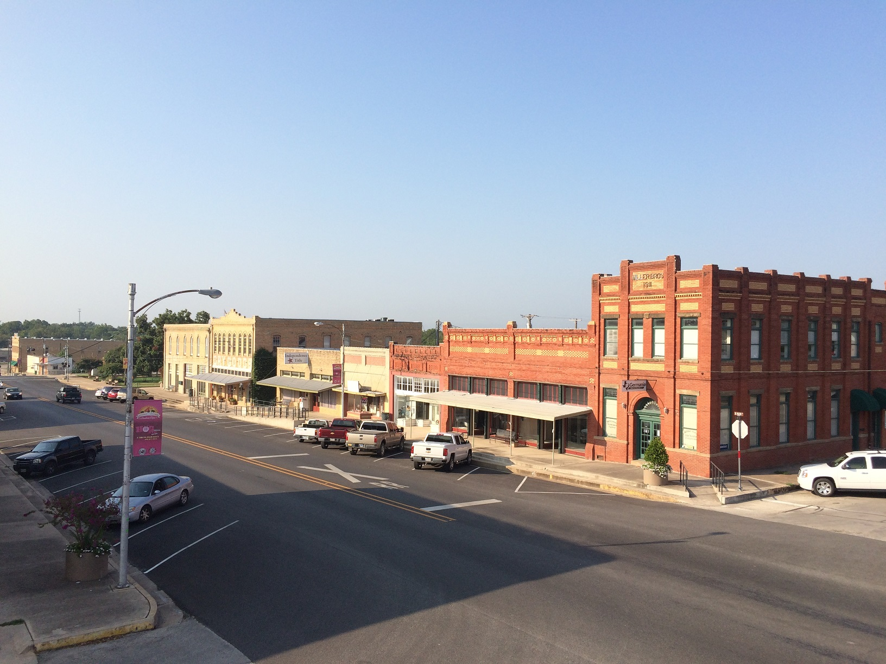
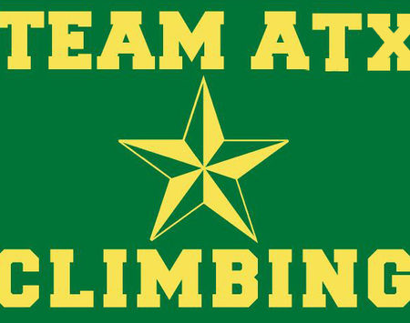

| Hank's Homepage • Home • About • Contact |
I'm a third-year Computer Science major at the University of Denver.
|
During my time at university, I've found a few categories of CS that are particularly interesting to me:
|
I hail from Elgin, a small town about an hour East of Austin, TX.
As a child, my summers were spent at CSJ, the barn where my Mom worked.
Although I grew up riding, I ultimately fell in love with rock climbing during the sport's infancy.
Whenever time allows, I love to find work in other countries.
Below are a couple pictures from my time in Skyros (Greece) over the pandemic,
while working at a horse conservancy.
September '23